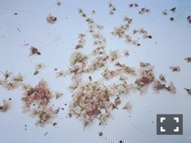

| 2016/04 09 Sat | アップルなんたら。 707回目 |
しばらく花粉症が風邪になって
身体を休めていました！
鼻声が治ってきた〜∠( 'ω')／
みなさん体調はいかがですか？
何日か引きこもって、
外に出て人と話したら
落ちてたところを少し取り戻しました。
がんばるぞー

メンズノンノさんの撮影で
みんなでお花見しました〜
つくって切って〜
サンドイッチには
粒マスタード大量に入れたい派です。
あと、ケイパーとオリーブペースト！
美味しくなるのよー
このようにみなさんは
サンドイッチの具で欠かせないもの
ありますかヽ(ﾟ､｡)ﾉ？
...
今月号のMdNを読んだら
きっと自分だけの一点物を
つくりたくなるはず！
私もつくりたくなった！
MdN連載のお相手は
れもんらいふの千原徹也さんです！
いつか拝見した
ZUCCaやl'atelier du savon
カタログのデザインが可愛くて！
そして装苑の表紙やPASS THE BATONも！
千原さんのつくる"かわいい"は
女の子がときめくものばかりです。
お家のようなオフィスで
楽しく作業してる姿が浮かんできます。
気さくでとても優しい方でした！
フォトグラフトバイ 千原徹也第1号
表面の青色の印刷が素敵で、
写真も撮られる千原さんの
幅広さに驚きました！
kanokoさん素敵〜
取材途中、遠山正道さんがいらっしゃって
嵐のように去っていくなど、
自由奔放な時間！面白かった笑
近くのサンドイッチ美味しかったです！
次号もお楽しみにっ

ぴあ ジャズワンダーランド
4月6日 MdN連載
4月7日 POTATO/duet
4月8日 メンズノンノ
25:45〜26:00
広島ホームテレビ「H♪LINE」
MdNスタッフさんが履いてたスニーカーが
面白くて、欲しくなったので
見つけて購入しました！
480円でゲット！！やった〜(^_^)v
今日はGirlsAwardで乃木坂ライブ〜
まりか
コメント(456)
2016/04/09 12:30